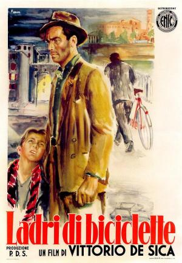

Ladri di biciclette

Género
Drama | Neorrealismo | Trabajo/empleo | Película de culto
Sinopsis
En la Roma de la posguerra, Antonio, un obrero en paro, consigue un sencillo trabajo pegando carteles a condición de que posea una bicicleta. De ese modo, a duras penas consigue comprarse una, pero en su primer día de trabajo se la roban. Es así como comienza toda la aventura de Antonio junto con su hijo Bruno por recuperar su bicicleta mientras su esposa María espera en casa junto con su otro hijo.